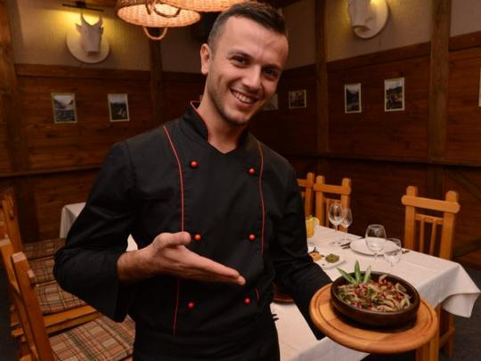

Здесь блюда тбилисской кухни готовят в
атмосфере вечного лета, а подают их с
традиционным грузинским гостеприимством.
Городская суета, вечная спешка
и усталость… Иногда хочется оказаться там, где течет другая –
размеренная жизнь. Ресторан "Гостидзе" - уникальное место,
где слились воедино стильный интерьер, грузинская кухня, летняя терраса и
потрясающий вид. Это то место, где можно окунуться в
атмосферу романтики, наблюдать потрясающую природу
или раствориться в собственных мыслях…

Текун Гачечиладзе - шеф-новатор, создатель новой грузинской кухни,
возглавивший гастрономическую революцию в Грузии. Шеф учился в США в
кулинарной академии Нью-Йорка, несколько лет работал в разных ресторанах,
оттачивая технику и обрастая опытом. После чего он вернулсь в родной Тбилиси
и поставил перед собой цель переосмыслить классическую кухню, создав в
результате свою концепцию и философию грузинской кухни. «Грузины ненавидят
меня», - говорит шеф. Харчо она варит с креветками, а из горной форели,
которую традиционно жарят, делает тартар с аджикой, в баже добавляет миндаль.
Тем не менее многие созданные им блюда уже стали грузинской классикой,
которые можно встретить во многих ресторанах страны.
Текуна впервые приехала в Украину, чтобы принять участие в конгрессе шеф-поваров FONTEGRO 2018.